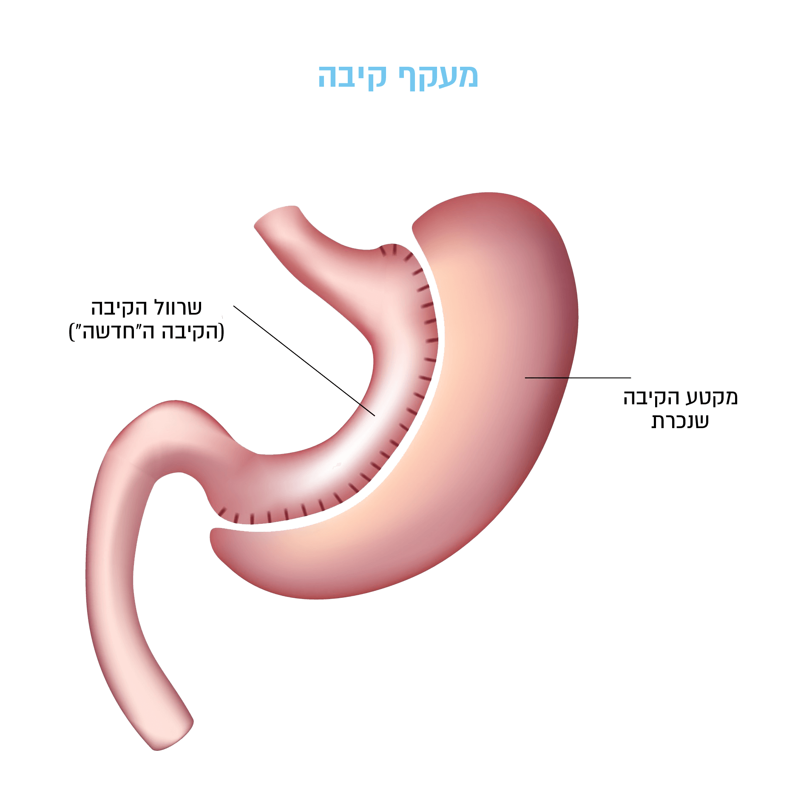

לניתוח 2 אפקטים מרכזיים:
1
ירידה בספיגה בזכות מעקף של מרבית הקיבה,
התרסריון וכ-1.5 מ' מעי ד
2
.מקטע הקיבה שנכרת כולל את החלק בקיבה שאחראי על הפרשת הורמון הגרהלין (הורמון הרעב), ומכאן שלאחר הניתוח מרבית המנותחים חווים דיכוי משמעותי בתחושת הרעב
